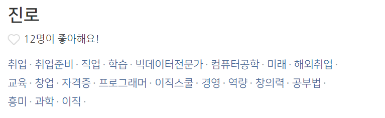
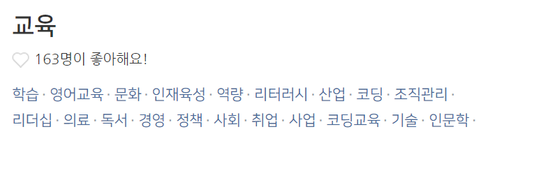

디스코에 가입할 때 선택하는 키워드는 키워드 별 그룹이 정해져 있다.
이런식으로 묶여있다. 이 키워드는 자신의 성향을 초기 설정하는 용도로 사용이 된다. 키워드의 개수는 많지 않다. 초기에 세팅하는 키워드의 수가 많지 않아도 괜찮을까? 키워드의 수는 얼마나 많아야 할까?
이와 살짝 다르게 디스코의 글에는 키워드를 매길 수 있다. 각각의 사용자들이
자신이 공유한 글에 맞는 키워드를 매기며 새로운 키워드들이 생겨나고, 생겨난 키워드들은
서로 연관관계를 갖기 시작한다.
어떤 방식인지는 잘 모르겠음.


PS. 우리 서비스를 본격적으로 업로드하기 전까지 별도로 디스코에서 테스트를 거쳐보는 건 어떨까?
메인페이지2의 예행연습을 여기에서 할 수 있을 것 같다. 그리고 잡쇼퍼 키워드를 계속 입력해서
진로 / 교육 관련 키워드에 잡쇼퍼가 연관되어 나오는지도 궁금하다.